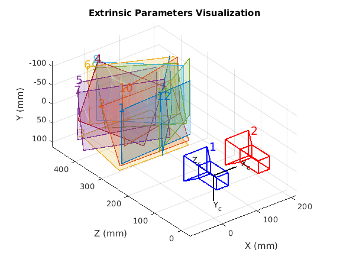

Contents
clear
clc
close all
Initializing the parameters
Load the stereoParameters object.
load('handshakeStereoParams.mat'); % Visualize camera extrinsics. showExtrinsics(stereoParams);
Creating video player
videoFileLeft = 'handshake_left.avi'; videoFileRight = 'handshake_right.avi'; readerLeft = vision.VideoFileReader(videoFileLeft, 'VideoOutputDataType', 'uint8'); readerRight = vision.VideoFileReader(videoFileRight, 'VideoOutputDataType', 'uint8'); player = vision.DeployableVideoPlayer('Location', [20, 400]);
Rectifying the video frames
frameLeft = readerLeft.step(); frameRight = readerRight.step(); [frameLeftRect, frameRightRect] = ... rectifyStereoImages(frameLeft, frameRight, stereoParams); figure; imshow(stereoAnaglyph(frameLeftRect, frameRightRect)); title('Rectified Video Frames');
Computing the disparity
Disparity(distance between the individual left and right pixels) is proportionalto distance of corresponding world from the camera
frameLeftGray = rgb2gray(frameLeftRect); frameRightGray = rgb2gray(frameRightRect); disparityMap = disparity(frameLeftGray, frameRightGray); figure; imshow(disparityMap, [0, 64]); title('Disparity Map'); colormap jet colorbar
Reconstructing the 3D scene
points3D = reconstructScene(disparityMap, stereoParams); % Convert to meters and create a pointCloud object points3D = points3D ./ 1000; ptCloud = pointCloud(points3D, 'Color', frameLeftRect); % Create a streaming point cloud viewer player3D = pcplayer([-3, 3], [-3, 3], [0, 8], 'VerticalAxis', 'y', ... 'VerticalAxisDir', 'down'); % Visualize the point cloud view(player3D, ptCloud);
Detecting the people in the left image
Create the people detector object. Limit the minimum object size for speed.
peopleDetector = vision.PeopleDetector('MinSize', [166 83]); % Detect people. bboxes = peopleDetector.step(frameLeftGray);
Determine The Distance of Each Person to the Camera
%Find the 3-D world coordinates of the centroid of each detected person and compute the distance from the centroid to the camera in meters. % Find the centroids of detected people. centroids = [round(bboxes(:, 1) + bboxes(:, 3) / 2), ... round(bboxes(:, 2) + bboxes(:, 4) / 2)]; % Find the 3-D world coordinates of the centroids. centroidsIdx = sub2ind(size(disparityMap), centroids(:, 2), centroids(:, 1)); X = points3D(:, :, 1); Y = points3D(:, :, 2); Z = points3D(:, :, 3); centroids3D = [X(centroidsIdx)'; Y(centroidsIdx)'; Z(centroidsIdx)']; % Find the distances from the camera in meters. dists = sqrt(sum(centroids3D .^ 2)); % Display the detected people and their distances. labels = cell(1, numel(dists)); for i = 1:numel(dists) labels{i} = sprintf('%0.2f meters', dists(i)); end figure; imshow(insertObjectAnnotation(frameLeftRect, 'rectangle', bboxes, labels)); title('Detected People');
Process the rest of the video
while ~isDone(readerLeft) && ~isDone(readerRight) % Read the frames. frameLeft = readerLeft.step(); frameRight = readerRight.step(); % Rectify the frames. [frameLeftRect, frameRightRect] = ... rectifyStereoImages(frameLeft, frameRight, stereoParams); % Convert to grayscale. frameLeftGray = rgb2gray(frameLeftRect); frameRightGray = rgb2gray(frameRightRect); % Compute disparity. disparityMap = disparity(frameLeftGray, frameRightGray); % Reconstruct 3-D scene. points3D = reconstructScene(disparityMap, stereoParams); points3D = points3D ./ 1000; ptCloud = pointCloud(points3D, 'Color', frameLeftRect); view(player3D, ptCloud); % Detect people. bboxes = peopleDetector.step(frameLeftGray); if ~isempty(bboxes) % Find the centroids of detected people. centroids = [round(bboxes(:, 1) + bboxes(:, 3) / 2), ... round(bboxes(:, 2) + bboxes(:, 4) / 2)]; % Find the 3-D world coordinates of the centroids. centroidsIdx = sub2ind(size(disparityMap), centroids(:, 2), centroids(:, 1)); X = points3D(:, :, 1); Y = points3D(:, :, 2); Z = points3D(:, :, 3); centroids3D = [X(centroidsIdx), Y(centroidsIdx), Z(centroidsIdx)]; % Find the distances from the camera in meters. dists = sqrt(sum(centroids3D .^ 2, 2)); % Display the detect people and their distances. labels = cell(1, numel(dists)); for i = 1:numel(dists) labels{i} = sprintf('%0.2f meters', dists(i)); end dispFrame = insertObjectAnnotation(frameLeftRect, 'rectangle', bboxes,... labels); else dispFrame = frameLeftRect; end % Display the frame. step(player, dispFrame); end % Clean up. reset(readerLeft); reset(readerRight); release(player);